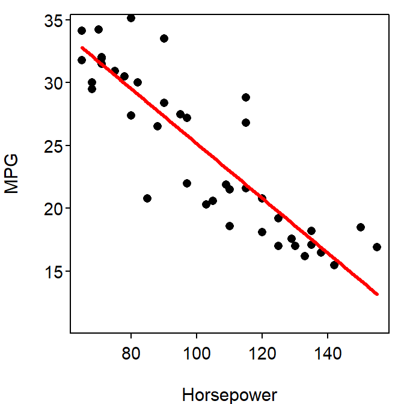

Car Horsepower and Gas Mileage I
- The results of
summary() are in Table 1. Interpretations of the coefficients are below.
- The y-intercept (46.93) is the estimated mean mpg for cars with no horsepower.
- The slope (i.e., the “hp” “Estimate”) says that for every increase in one horsepower the mpg will decrease by 0.22, on average.
- Interpretations of the p-values in Table 1 are below.
- The “Intercept” p-value (p<0.00005) shows that the mean mpg for cars with no horsepower is different than zero (a nonsensical significance test).
- The slope (in “hp” row) p-value (p<0.00005) shows that the slope is significantly different from zero, which indicates that there is a significant relationship between the horsepower and mpg of a car.
- The coefficient of determination (“multiple r-squared”; 0.78) is the proportion of the total variability in mpg (ignoring horsepower) that is explained away by knowing a horsepower value.
- Confidence intervals for the model coefficients are in Table 2. Interpretations for each confidence interval are below.
- The “intercept” CI says that the mean mpg for cars with no horsepower is between 43.0 and 50.8.
- The slope (i.e., “hp” row) CI says that the mpg will decrease between 0.18 and 0.25 for a one unit increase in horespower.
- The ANOVA table is shown in Table 3. How each degrees-of-freedom is calculated is below.
- The regression df (in the “hp” row) df is one less than the number of parameters estimated (2 – intercept and slope).
- The residual df is the number of observations (42) minus the number of parameters estimated (2).
- The total df is not shown on the table but is equal to the number of observations minus 1.
- The meanings of each MS in Table 3 are below.
- The MS regression (in the “hp” row) is the variance in mpg that can be explained by knowing the value of horespower.
- The MS residual is the variance in mpg after considering horsepower or the variability of individuals around the best-fit line (i.e., the full model).
- The total MS is not shown in the table but is the variance in mpg or the variability of individuals around the grand mean (i.e., the simple model).
- The F test statistic is the ratio of variability in mpg explained by knowing the value of horespower to the variability unexplained even after knowing the value of the horsespower. The F (141.5) and corresponding p-value (p<0.00005) show that the full model including the slope is significantly “better” than the simple model with no slope. Thus, a slope “is needed” and it can be concluded that there is a significant relationship between a car’s horespower and its gas mileage.
- There is a significant relationship as indicated by the very small slope and F-test p-values (p<0.00005).
- The relationship between a car’s mpg and horsepower is shown in Figure 1.
Table 1: Summary of the linear regression of mpg on horsepower.
Estimate Std. Error t value Pr(>|t|)
(Intercept) 46.92659 1.92184 24.42 < 2e-16
hp -0.21762 0.01829 -11.90 1.03e-14
---
Residual standard error: 3.096 on 40 degrees of freedom
Multiple R-squared: 0.7796, Adjusted R-squared: 0.7741
F-statistic: 141.5 on 1 and 40 DF, p-value: 1.027e-14
Table 2: Confidence intervals for coefficients of the linear regression of mpg on horsepower.
2.5 % 97.5 %
(Intercept) 43.0424051 50.810780
hp -0.2545932 -0.180651
Table 3: ANOVA table for simple linear regression results of mpg on horsepower.
Df Sum Sq Mean Sq F value Pr(>F)
hp 1 1356.83 1356.83 141.53 1.027e-14
Residuals 40 383.48 9.59

Figure 1: Scatterplot of mpg on horsepower for cars with the best-fit line.
R Appendix.
car <- read.csv("CarMPG.csv")
lm1 <- lm(mpg~hp,data=car)
summary(lm1)
confint(lm1)
anova(lm1)
fitPlot(lm1,xlab="Horsepower",ylab="MPG")